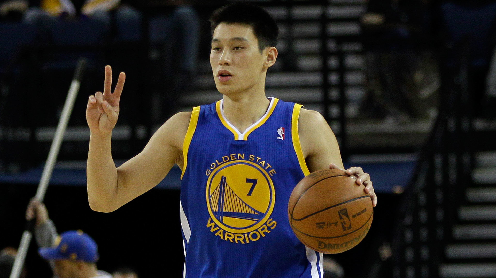
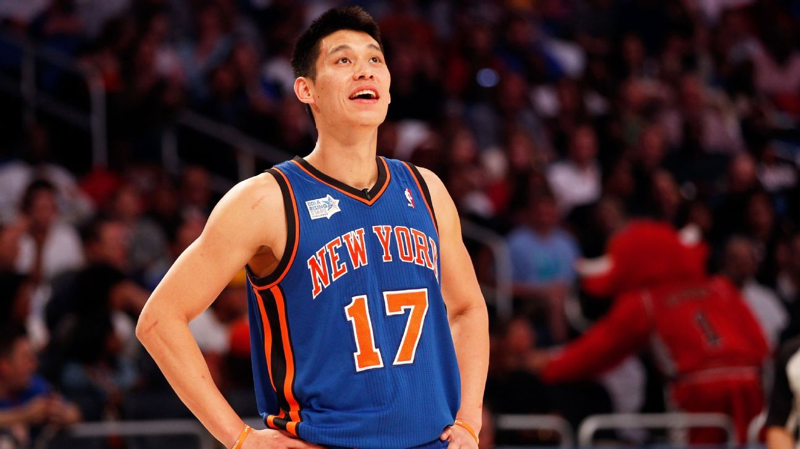
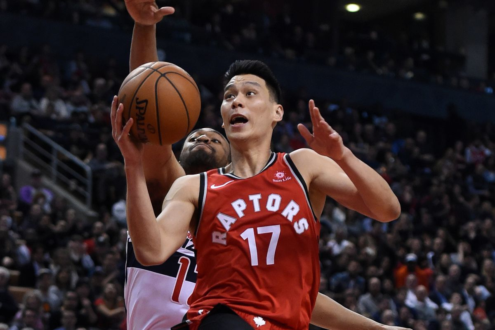

 Fresh out of Harvard, Lin went undrafted in the 2010 NBA Draft. Scouts had described him as "a smart passer with a flawed jump shot and a thin frame, who might not have the strength and athleticism to defend, create his own shot or finish at the rim in the N.B.A." Lin then briefly joined the Dallas Mavericks for mini-camp as well as their NBA Summer League team in Las Vegas. After Summer League, on July 21, 2010, Lin signed a two-year deal with his hometown team, the Golden State Warriors. He was the first Chinese or Taiwanese-American to ever play in the league, and recieved unexpected amounts of attention considering he was an undrafted rookie. On the first day of training camp on December 9, 2011, the Warriors waived Lin. After his lackluster stint with the Warriors ended, Lin played a couple games overseas in the Chinese Basketball Association (CBA). He didn't stay for very long, as he was claimed off of waivers by the Houston Rockets on December 12, 2011. Two weeks later, he was waived once again. On December 27, the New York Knicks claimed Lin off of waivers to be backup for their existing guards. His play time was limited, but he was still the first to arrive at practice and the last to leave. He continued studying game footage, trying to improve his game to earn a spot to play. Finally, on February 4, 2012, Lin got his chance to shine in a game against the New Jersey Nets.
 Lin showed up for 25 points, 5 rebounds, and 7 assists in a 99-92 victory, turning some heads in the process. It was the following game against the Utah Jazz, however, when Linsanity™ really started to take off. With star players Carmelo Anthony and Amare Stoudemire out with injury, Lin had his first career start. Lin had 28 points and 8 assists in the Knicks' 99–88 win. Game after game, Lin produced big numbers all while leading his team to victory. In a 107–93 win over the Washington Wizards, Lin played against John Wall and had 23 points and 10 assists, recording his first double-double. On February 10, Lin scored a new career-high 38 points and had seven assists, leading the Knicks in their 92–85 victory over the Los Angeles Lakers. On February 11, Lin scored 20 points and had eight assists in a narrow 100–98 victory over the Minnesota Timberwolves. Lin was named the Eastern Conference Player of the Week after averaging 27.3 points, 8.3 assists and 2.0 steals in those four starts with the Knicks going undefeated. Coaches, media and the fans were all shocked. Virtually overnight, Lin had gone from a player no one has heard of, to a global sensation. This was the start of Linsanity™.
One of the most memorable moments of Linsanity™ was the last second game-winner that Raptors fans are all too familiar with as it happened on Toronto’s home court. Lin hadn’t played a great game overall, but with 20 seconds left on the clock and the two teams tied, the ball was in his hands.
 You can tell by watching the excited reaction of the Toronto fans that Linsanity™ had truly took over the sport. A player from the opposing team just hit the game-winning shot and fans were brought to their feet and erupted in cheers and applause. It truly was a global craze.
During the 2012 offseason, Lin went on to sign with the Houston Rockets. Lin struggled as he failed to live up to expectations of fans. He would endure several injuries, limiting play time. Overtime, Lin faded into the rest of the NBA. The following seasons he got traded to the Los Angeles Lakers, and then the Charlotte Hornets. On July 7, 2016, he signed with the Brooklyn Nets, where he would play for 2 years. Once again, injuries would restrict his playing. After his tenure in Brooklyn, Lin found himself with the Atlanta Hawks. At this point, many beleived he would never return to his Linsanity™ status. Finally, in 2019, he got traded to the Toronto Raptors, who he currently plays for.